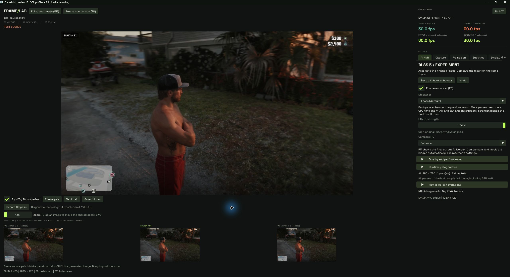

FrameLab NR enhancer: complete setup

The preview.15 full ZIP includes FrameLab, frame generation, both game demos, the offline Czech translation model, export tools and the NR adapter. No compiler, Python or SDK installation is required. NR model/runtime files are a separate external download.
Community experiment, not an official NVIDIA installer. As checked on 19 November 2026, NVIDIA has not made the NR SDK publicly available. The external archive below is supplied by Veyra. ShortFuse is a modified NVIDIA runtime. Usage and redistribution rights for these exact files have not been established here; linking, importing and matching checksums do not grant those rights. Use the import only with the applicable authorization. NVIDIA statement · Veyra component provenance and terms.
Download → extract → import
- Download FrameLab preview.15 full Windows x64 ZIP. Extract all into a new writable folder. Allow about 4 GB for both downloads, extraction and import. Run 1 - Spustit FrameLab.cmd to try the included demos. General installation and bundled neural OCR.
- External download: Veyra-2.1.9-NVIDIA-win64-portable.zip — 731 MB. Author's release page. Select this exact NVIDIA portable archive, not AMD, Source code or the Virtual Camera variant. Keep it zipped; Veyra does not need to run.
- Close FrameLab. Run 4 - Doplnit enhancer.cmd. Button 1 opens the external download; button 2 selects the downloaded ZIP and imports it. The same wizard is accessible from AI / NR → Set up / check enhancer. The current wizard labels are Czech; the numbered steps are the same.
- Wait for Soubory jsou pripravene (files ready). The importer checks the archive hash and both DLL hashes, copies only the required runtimes and notices, and records provenance. It changes no driver, Windows folder or service, and requires no administrator privileges.
- Relaunch FrameLab → AI / NR → Enable enhancer (F6). Start at 720p, 65% strength, Split comparison. F7 changes view, F8 freezes the paired frame, F6 disables the effect. Runtime initialization determines whether the selected GPU/profile actually works.
Requirements and troubleshooting
- The default ShortFuse NR 310.9.16 profile was tested on RTX 4050 Laptop and RTX 5070 Ti. The NVIDIA NR 310.8 original profile was also checked on RTX 5070 Ti with two sequential passes. This does not validate other cards.
- No AI / NR tab: preview.10 was built without the adapter. Upgrade to the complete preview.15 first; copying DLLs into preview.10 cannot enable it.
- Wrong checksum: use the exact archive above; finish or repeat the download. Unknown versions are rejected.
- Access denied or file in use: close FrameLab and retry in a writable folder.
- Administrator blocks the wizard: respect that policy. With administrator authorization, use manual import below instead of changing system policy.
- Model initialization fails: check NVIDIA drivers, profile and GPU memory; try a 360p/540p limit. The error is shown in AI / NR and
app/nr-cache/nr-host.log. - External download removed: an existing verified archive may be imported with applicable authorization. Without a compatible runtime, NR is unavailable; the other FrameLab features still work. The official NVIDIA DLSS download currently supplies other DLSS technologies, not a substitute NR file.
Pipeline: input → selected frame generation → NR → Czech subtitle overlay → display. NR Original means the frame entering NR, potentially already generated. Enhancement can add latency, drop frames and alter HUD/details. Real before/after examples.
Manual import: copy the external archive's runtime/experimental/nr-ampere/nvngx_dlssnr.dll to FrameLab/app/runtime/nr-sf/nvngx_dlssnr.dll and runtime/experimental/nr-original/nvngx_dlssnr.dll to FrameLab/app/runtime/nr-original/nvngx_dlssnr.dll; preserve its NVIDIA notices under FrameLab/app/licenses/nr-external. Do not replace FrameLab's own app/nr-host/nvngx.dll.
External archive size: 731012476 bytes. SHA-256: 4225ecb11a8e96c2826b4b0b798feb811d7ae237f3edf0b627f3b6895c79f362. Exact DLL identities and licensing audit. External hosting is not a licensing workaround.
Fullscreen: F11 automatically hides comparisons and shows one final image at the configured enhancement strength. Esc/F11 returns to settings. Illustrated fullscreen guide.
NR passes: start at one
In AI / NR → NR passes, choose 1, 2, 3 or 4. One is the default, including when loading older settings. This is independent of the frame-generation multiplier: two NR passes process each image twice; they do not create twice as many frames.
Each pass receives the full-resolution result of the preceding pass and maintains its own temporal history. Effect strength blends the final result with the unchanged input once. Use F7/F8 for the same-frame comparison. The ms total figure covers all passes of the last completed frame, including GPU waits; it is not per-pass time or end-to-end latency.
More passes increase work and memory use and may magnify artifacts. Try two at the same 720p limit and strength, then compare. If output FPS falls, return to one or lower the processing limit. The original and ShortFuse profiles can produce different results. The website's older NR comparison exports use one pass; they are not multi-pass quality evidence.